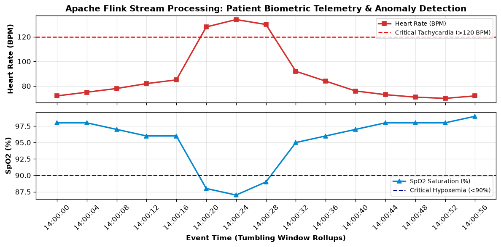

| Window Interval | Patient ID | Hospital Ward | Readings | Avg Heart Rate | Min SpO2 | Episode Classification |
|---|---|---|---|---|---|---|
| 15:51:20-15:51:40 | PAT_102 |
ICU-Bed-02 | 1 | 65.0 BPM | 99.0% | STABLE |
| 15:51:20-15:51:40 | PAT_104 |
General-Ward-07 | 3 | 79.3 BPM | 96.7% | STABLE |
| 15:51:20-15:51:40 | PAT_101 |
ICU-Bed-01 | 1 | 78.0 BPM | 98.3% | STABLE |
| 15:51:20-15:51:40 | PAT_105 |
Post-Op-Recovery-02 | 1 | 88.0 BPM | 98.4% | STABLE |
| 15:51:20-15:51:40 | PAT_103 |
Cardiac-Care-03 | 1 | 79.0 BPM | 96.1% | STABLE |
| 15:51:40-15:52:00 | PAT_103 |
Cardiac-Care-03 | 2 | 107.0 BPM | 94.3% | ABNORMAL OBSERVED |
| 15:51:40-15:52:00 | PAT_104 |
General-Ward-07 | 2 | 74.5 BPM | 97.7% | STABLE |
| 15:51:40-15:52:00 | PAT_101 |
ICU-Bed-01 | 2 | 76.0 BPM | 96.3% | STABLE |
| 15:51:40-15:52:00 | PAT_105 |
Post-Op-Recovery-02 | 4 | 77.8 BPM | 96.7% | STABLE |
| 15:52:00-15:52:20 | PAT_105 |
Post-Op-Recovery-02 | 6 | 76.3 BPM | 96.5% | STABLE |
| 15:52:00-15:52:20 | PAT_102 |
ICU-Bed-02 | 2 | 73.5 BPM | 97.3% | STABLE |